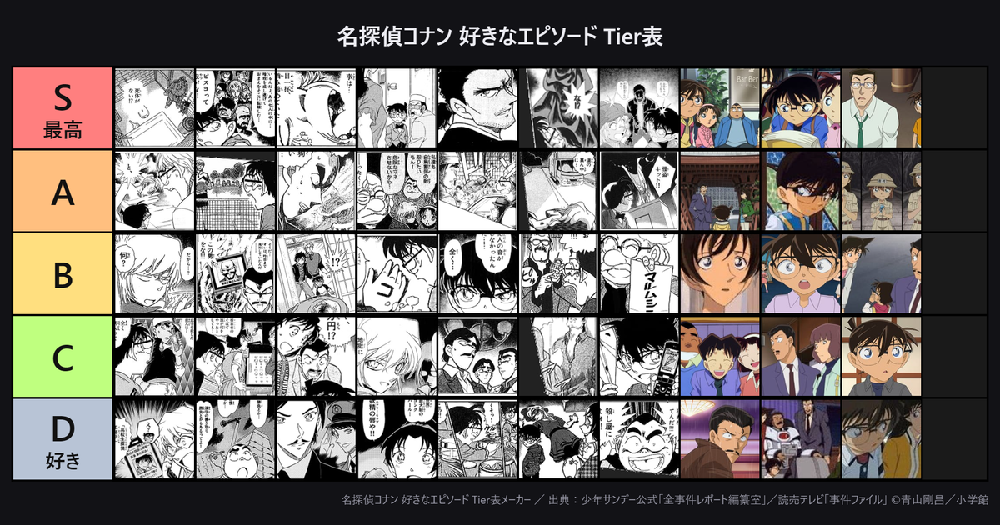

名探偵コナン 好きなエピソード Tier表メーカー ／ 出典：少年サンデー公式「全事件レポート編纂室」／読売テレビ「事件ファイル」 ©青山剛昌／小学館
バックアップや、他の端末への引き継ぎに使えます

コナン 主題歌Tier表メーカー べーた 歴代OP・ED主題歌133曲を、動画を見ながらTier表に並べられます。 コナン自己紹介カードメーカー べーた
名探偵コナンの自己紹介カードを作って、画像で保存・Xに投稿できます。
コナン自己紹介カードメーカー べーた
名探偵コナンの自己紹介カードを作って、画像で保存・Xに投稿できます。